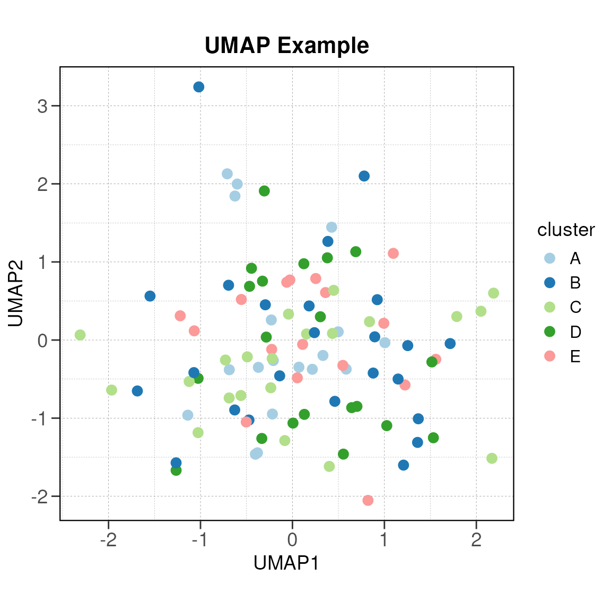

Get Started
Author: Matthew Hung
Last Updated: 2025/04/02
plotr.RmdNow let’s load the package:
library(plotr)
#>
#> Attaching package: 'dplyr'
#> The following objects are masked from 'package:stats':
#>
#> filter, lag
#> The following objects are masked from 'package:base':
#>
#> intersect, setdiff, setequal, union
#>
#> Attaching package: 'cowplot'
#> The following object is masked from 'package:patchwork':
#>
#> align_plots
#> Loading required package: viridisLite
library(ggplot2)Theme Functions
The plotr package includes several theme functions to quickly style your ggplot2 visualizations:
theme_text()
theme_text() provides consistent text styling with
Helvetica font and appropriate sizing:
ggplot(mtcars, aes(wt, mpg)) +
geom_point() +
theme_text() +
labs(title = "theme_text() Example")theme_border()
theme_border() provides a clean theme with borders:
ggplot(mtcars, aes(wt, mpg)) +
geom_point() +
theme_border() +
theme_text() +
labs(title = "theme_border() Example")theme_line()
theme_line() provides a minimal theme with axis lines
instead of full borders:
ggplot(mtcars, aes(wt, mpg)) +
geom_point() +
theme_line() +
theme_text() +
labs(title = "theme_line() Example")Additional Themes
Other themes include:
-
theme_noaxisticks(): Theme without axis ticks -
theme_gridlines(): Lighter gridlines styling -
facet_aes(): Enhanced facet_wrap aesthetics -
umap_aes(): Special aesthetics for dimension reduction plots
Color Palettes
The plotr package provides access to various color palettes:
Available Palettes
You can use the display_palettes() function to see all
available palettes:
Using Palettes
You can use the get_palette() function to retrieve
colors from a palette:
# Get colors from a package palette
kelly_colors <- get_palette(pal_kelly_20, n = 5)
print(kelly_colors)
#> [1] "#f3c300" "#875692" "#f38400" "#a1caf1" "#be0032"
# Use with ggplot
ggplot(mtcars, aes(wt, mpg, color = factor(cyl))) +
geom_point(size = 3) +
scale_color_manual(values = kelly_colors) +
theme_line() +
theme_text() +
labs(title = "Kelly Colors Palette Example")
The get_palette() function also works with viridis and
RColorBrewer palettes:
# Using viridis
ggplot(mtcars, aes(wt, mpg, color = factor(cyl))) +
geom_point(size = 3) +
scale_color_manual(values = get_palette("viridis", n = 3)) +
theme_line() +
theme_text() +
labs(title = "Viridis Palette Example")
# Using RColorBrewer
ggplot(mtcars, aes(wt, mpg, color = factor(cyl))) +
geom_point(size = 3) +
scale_color_manual(values = get_palette("Blues", n = 3)) +
theme_line() +
theme_text() +
labs(title = "Blues Palette Example")Plot Functions
plot_percent()
The plot_percent() function creates percentage/frequency
bar plots:
# Convert variables to factors first
mtcars$cyl <- as.factor(mtcars$cyl)
mtcars$am <- as.factor(mtcars$am)
# Basic percentage plot
plot_percent(mtcars, group.by = "am", variable = "cyl")Customized plot_percent
The function has many customization options:
# With custom colors
plot_percent(
mtcars,
group.by = "am",
variable = "cyl",
cols = get_palette("viridis", n = 3),
bar.width = 0.7,
bar.color = "black",
y.label = "Percentage"
)Faceted Percentage Plot
You can also create faceted plots:
# Convert vs to factor
mtcars$vs <- as.factor(mtcars$vs)
# Faceted plot
plot_percent(
mtcars,
group.by = "am",
variable = "cyl",
facet.by = "vs",
cols = get_palette(pal_kelly_20, n = 3)
)Horizontal Percentage Plot
You can change the orientation to horizontal:
plot_percent(
mtcars,
group.by = "am",
variable = "cyl",
orientation = "horizontal",
theme = "border",
cols = get_palette(pal_zissou_5, n = 3),
x.label = "Transmission Type"
)Specialized Visualizations
UMAP Aesthetics
For dimension reduction plots, you can use the
umap_aes() function:
# Create sample UMAP data
set.seed(123)
umap_data <- data.frame(
UMAP1 = rnorm(100),
UMAP2 = rnorm(100),
cluster = sample(LETTERS[1:5], 100, replace = TRUE)
)
# Plot with umap_aes
ggplot(umap_data, aes(UMAP1, UMAP2, color = cluster)) +
geom_point(size = 3) +
theme_text() +
scale_color_manual(values = get_palette(pal_brewerplus_41, n = 5)) +
labs(title = "UMAP Example") +
umap_aes()